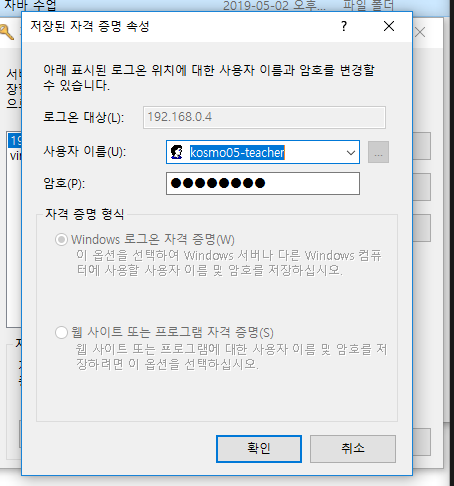

오라클 설치
관리자 권한으로 실행
전역데이터베이스 이름 : orcl11 pw : abcd1234
보안메일 받지않음
운영체제 요구사항/서버/네트워크구성 체크
암호관리 - scott 체크해제 암호: tiger
암호관리 스킵시 1) SESSION - NEW - sys : abcd1234 - connect : sysdba
2) ALTER user scott account unlock; 락을 해제하는 명령어
ALTER user scott identified by tiger; 비밀번호 설정
토드(toad) 툴 설치하기- 기술 이력서에 사용툴로 등록
Toad DBA Suite for Oracle 11.5 Commercial 설치
관리자 권한으로 실행
benchmark 체크해제 -(붉은표시)
키 입력
LicenseKey: CJ2PFCQ6P49Q4WHQT2D03GNTVX2AN5DG6FWD04YL4QW625KT391J9YF38VKB92SNBWNW-RU-BOARD-BD
SiteMessage: cr2384
TOAD 실행 - SCOTT - TIGER 입력 실행
명령어 입력 - ctrl + enter
서버란?
서비스를 제공하는 하드웨어
네트워크를 감시 제어하거나 연결 혹은 공유할수있는 역할
클라이언트의 요청을 처리하는 시스템
정보를 제공하는 측은 모두 서버라 할 수 있다.
클라이언트?
서버에서 제공하는 정보를 누리는 사용자/장비
파일 서버로부터 파일의 내용을 요청하는 워크스테이션
서버제품이 필요한가?
yes. 편리하기에
그렇다고 생각하는 이유
ex) 애버노트 : 동기화가 가능 [서버에 관리가 되고있다]
ex) 게임서버 : 동시접속이 가능하다
전제조건 : 인터넷(네트워크)에 연결이 되어있어야 한다. 접속하기 위해서는 포트번호(1521)도 필요하다.
192.168.0.235
192.168.0.5
cmd로 접속하는 방법
sqlplus @192.168.0.235:1521:orcl11
사용자 : scott
암호 : tiger
select * from emp;
DML - 데이터를 조작하는 언어 - 입력,수정,삭제
DDL - 구조(계정의 락을 해제)를 정의하고 변경하는 언어
DCL - 데이터의 보안, 무결성, 데이터 회복, 병행수행 제어 등을 정의하는데 사용하는 언어
ALTER - DDL 예약어
ALTER user scott account unlock; 락을 해제하는 명령어
ALTER user scott identified by tiger; 비밀번호 설정
| 오라클 | 자바 |
프로그램 | ORACLE 11G(SQL) | JVM(SW) jdk8 |
서버에 접속 및 명령문 작성 프로그램 | TOAD(서버 접속 및 명령문 작성) | eclipse(line No.작성/compile) *compile - 고급언어->저급언어 |
자바-오라클
계정생성
다운로드-자바-다바 디벨롭스- Java SE Development Kit 8 - Downloads - 64비트
이클립스
다운로드-64비트
자바설치
관리자 권한 실행
경로 설정 change - c:wjdk1.8w
jre는 경로 그대로
test - cmd- java -version으로 확인 버전 정보 뜨면 성공
이클립스툴 설치
관리자권한 실행
두번째거 설치
코딩?
영어로 작성
명령문 작성 실행
apl이 예약어 이클립스에 작성
이클립스
c:workspace_java 생성
이클립스 workspace 경로 설정
인코딩 맞추기(한글 안깨지게 하는거)
window-preferences-general-workspace-맨밑에 other-(UTF-8)
자바 가상머신 확인 java-installed JREs
general-content types-JAVA CLASS FILE-디폴트인코딩-utf-8
프로젝트 생성 file-new-other-new java project
src안에 명령문을 저장(고급언어 저장)
저급언어는 맨 밑에 있는 bin확장자에 저장
컴파일 생성
src-new-package
name-com.basic
com.basic-new-class
name-HelloWorld/main에 체크(설치파일 만드는거) 메인메소드(exe파일 만드는거)
java-블록으로 바꾸는것-class(재사용이 가능하다)
class에는 이름이 반드시 필요하다
class를 만들때 class를 이름 앞에 붙임 ex)class HelloWorld
class 의 영역을 표시하는 것 -{ } 안에 작성을 해야한다
class안에 올수 있는것 1. 명사 : type이 존재한다(숫자,문자)
2. 동사
똑같은 동사를 다른 장치에서도 공유가 가능(재사용)
동사를 사용하는 것(메소드)
학습목표
자바가상머신을 설치하고 설치된 버전 확인
이클립스 툴을 설치하고 자바가상머신설치 경로를 확인할 수 있다.
이클립스
글꼴바꾸기 window-preferences-general-appearance-colors and fonts-java-java editor
클래스 안에 // 표시후 작성하는 글은 주석으로 실제 적용되지 않은 부분이다.
메소드에는 () 가 존재한다. 메소드는 동사
타입을 지키지 않은 것 : 문법 에러
변수
메모리 RAM 휘발성
메모리가 넘치는것 overflow
RAM은 FIFO 먼저 들어온것을 먼저 내보낸다
명령문을 기억 시키는데는 공간이 필요하다. 그것을 RAM에 기억시킨다
공간할당에는 이름이 필요하다
int sal = 800; 여기서는 sal이 이름
이름안에 있는 데이터를 가져오기 위해 변수선언을 한다
int = 숫자를 나타내는 변수 integer
타입은 공간의 모양이라 볼 수 있다.
package com.basic;
// 이쪽은 클래스
// 클래스 이름은 HelloWorld이다
public class HelloWorld {
// ctrl+s 저장 된 후 즉시 컴파일 해줌(이클립스가 해준다)
// 한글에서 코딩을 해도 안된다(컴파일을 안해준다. 컴파일은 컴퓨터가 이해하는 언어)
public static void main(String[] args) {
// 여기는 메인메소드
// 명사형을 쓸 수 있다.
// 공간을 할당하는 것을 변수 선언이라고 한다.
// 변수이름은 직관적인것을 사용한다
// =는 대입해달라는 연산자.대입연산자 =
// 같다는 표시는 == ex)1==1 참(true)
// int는 타입
// 자바에서는 여러가지 타입을 제공한다.
// 오라클에 저장된 정보가 여러가지임
// SELECT ename, sal FROM emp
// ename,sal등등은 컬럼
// 변수를 쓰는 것은 저장공간을 만드는것.
// 앞부분에 타입을 나타내야한다.
// 변수를 선언했고 대입연산자를 사용해서 그 변수에 800(값)을 저장했다 int sal = 800;
// 정수를 담을때는 타입은 반드시 int를 사용한다. (약속)
int sal = 800;
// 위 처럼 다른 값을 대입할 수 있다.
// 변수 sal안에 있는 800 숫자 출력해보기 화면에다
// sys +ctrl+space - sysout
// system.out.println(sal); 이건 변수(sal)를 호출하는 명령문
// system - 너의 pc를 가리킨다
// out - 명사형인데 출력을 내보낼때 사용하는 명사형
// println() - 메소드 (괄호가 붙어있으면 메소드) - 화면에 출력을 할 수 있다.
// 실행 ctrl+s 저장후 오른쪽클릭 run as - java 어플리케이션 실행 하면 결과값을 볼 수 있다.
System.out.println(sal);//800
System.out.println(sal+10);//810
sal = sal*2;
System.out.println(sal-10);//1590
System.out.println(sal+100);//1700
System.out.println(sal+200);//1800
// 아래 코드는 변수를 사용하지 않았다
System.out.println(500);//500은 상수
// 변수는 상수로 일괄처리로 바꿀수 있다. 상수는 일일이 하나하나 바꿔야한다
// name="SMITH"
}
}